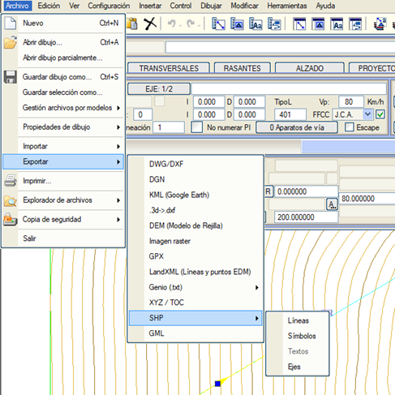

| |
|
SHP DOSYALARINI DIŞA AKTARMA
|
| Mevcut çizimdeki harita verilerinden SHP dosyaları yazma imkanı sunulur. Bu dosyaları oluşturan elemanlar, kotlu çoklu doğrular (PolyLineZ), kotlu noktalar (PointZ) ve metin yazımıdır. Metinlerin dışa aktarılması için, metinlerin koordinatlarını içeren bir SHP dosyası ve içeriklerini içeren başka bir DBF dosyası yazılır. 
Eğer haritada kapalı çoklu doğrular bulursa, araç bu kapalı çoklu doğruların POLYGON formatında bir dosyaya yazılıp yazılmayacağını soracaktır. Eğer Hayır yanıtı verilirse, tüm çoklu doğrular tek bir dosyaya yazılacaktır, ancak yanıt Evet ise, iki dosya yazılır: Biri açık çoklu doğruları içeren ve diğeri sadece kapalı çoklu doğruları içeren _POLYGON sonekli bir dosya. Güzergah Projesi menüsünden proje eksenlerini Shape (SHP) formatında dışa aktarmak mümkündür. |